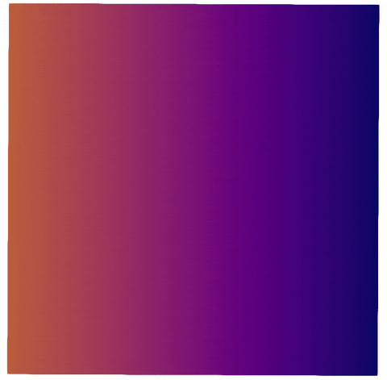

Electrophysiology Tutorial 1: Simple Spiral Wave

This tutorial shows how to perform a simulation of electrophysiological behavior of cardiac tissue.
Introduction
The most widespread model of cardiac electrophysiology is the monodomain model. It can be defined on a domain $\Omega$ as the system of partial differential equations
\[\begin{aligned} \chi C_{\textrm{m}} \partial_t \varphi &= \nabla \cdot \boldsymbol{\kappa} \nabla \varphi - \chi I'(\varphi, \boldsymbol{s}, t) & \textrm{in} \: \Omega \, , \\ \partial_t \boldsymbol{s} &= \mathbf{g}(\varphi, \boldsymbol{s}) & \textrm{in} \: \Omega \, , \\ 0 &= \boldsymbol{\kappa} \nabla \varphi \cdot \mathbf{n} & \mathrm{on} \: \partial \Omega \, , \end{aligned}\]
together with admissible initial conditions and a cellular ionic model to determine $I'$ and $\mathbf{g}$. ${\boldsymbol{\kappa}}$ denotes the conductivity tensor, $\varphi$ is the transmembrane potential field, $\chi$ is the volume to membrane surface ratio, $C_{\mathrm{m}}$ is the membrane capacitance, and $I'(\varphi, \boldsymbol{s}, t) := I_{\textrm{ion}}(\varphi, \boldsymbol{s}) + I_{\textrm{stim}}(t)$ denotes the sum of the ionic current due to the cell model and the applied stimulus current, respectively.
In this tutorial we will apply a reaction-diffusion split to this model and solve it with an operator splitting solver. For some theory on operator splitting we refer to the theory manual on operator splitting.
Commented Program
We start by loading Thunderbolt, OrdinaryDiffEqOperatorSplitting and LinearSolve to use a custom direct solver of our choice.
using Thunderbolt, LinearSolve, OrdinaryDiffEqOperatorSplittingWe start by constructing a square domain for our simulation.
mesh = generate_mesh(Quadrilateral, (2^6, 2^6), Vec{2}((0.0,0.0)), Vec{2}((2.5,2.5)));Here the first parameter is the element type and the second parameter is a tuple holding the number of subdivisions per dimension. The last two parameters are the corners defining the rectangular domain.
We can also load realistic geometries with external formats. For this simply use either FerriteGmsh.jl or one of the loader functions stated in the mesh API.
We now define the parameters appearing in the model. For simplciity we assume $C_{\mathrm{m}} = \chi = 1.0$ and a homogeneous, anisotropic symmetric conductivity tensor.
Cₘ = ConstantCoefficient(1.0)
χ = ConstantCoefficient(1.0)
κ = ConstantCoefficient(SymmetricTensor{2,2,Float64}((4.5e-5, 0, 2.0e-5)));If the mesh is properly annotated, then we can generate (or even load) a cardiac coordinate system. Consult coordinate system API documentation for details. With this information we can construct idealized microstructures to define heterogeneous conductivity tensors e.g. as
microstructure = create_simple_microstructure_model(
coordinate_system,
LagrangeCollection{1}()^3;
endo_helix_angle = deg2rad(60.0),
epi_helix_angle = deg2rad(-60.0),
)
κ = SpectralTensorCoefficient(
microstructure,
ConstantCoefficient(SVector(κ₁, κ₂, κ₃))
)where κ₁, κ₂, κ₃ are the eigenvalues for the fiber, sheet and normal direction.
The spiral wave will unfold due to the specific construction of the initial conditions, hence we do not need to apply a stimulus.
stimulation_protocol = NoStimulationProtocol();Now we choose a cell model. For simplicity we choose a neuronal electrophysiology model, which is a nice playground.
cell_model = Thunderbolt.FHNModel();A full list of all models can be found in the API reference. To implement a custom cell model please consult the how-to section.
Now we put the components together by instantiating the monodomain model. The sixth argument is the coordinate system the cell model is evaluated in. It is what the model hands to the cell model as its x, and it is also what an initial condition written as a function of position is evaluated against. On a plain box a Cartesian coordinate is what we want; on a real heart one would pass a generalized coordinate system here instead (see the coordinate system API).
ep_model = MonodomainModel(
Cₘ,
χ,
κ,
stimulation_protocol,
cell_model,
CartesianCoordinateSystem(mesh),
:φₘ, :s,
);We now annotate the model to be reaction-diffusion split. Special solvers need special forms for the model. However, the same solver can work with different forms. In the case of operator splitting users might choose to split the equations differently. Hence we leave it as a user option which split they prefer, or if they even want work on the full problem.
split_ep_model = ReactionDiffusionSplit(ep_model);We now need to transform the space-time problem into a time-dependent problem by discretizing it spatially. This can be accomplished by the function semidiscretize, which takes a model and the disretization technique. Here we use a finite element discretization in space with first order Lagrange polynomials to discretize the displacement field.
The discretization API does now play well with multiple domains right now and will be updated with a possible breaking change in future releases.
spatial_discretization_method = FiniteElementDiscretization(
Dict(:φₘ => LagrangeCollection{1}()),
)
odeform = semidiscretize(split_ep_model, spatial_discretization_method, mesh);We now allocate a solution vector and set the initial condition. create_initial_condition allocates and fills in every model's own default – here the resting state of the FitzHugh-Nagumo cell model.
u₀ = create_initial_condition(odeform, Float32);The spiral wave then comes from perturbing the two field variables the model published by name. :φₘ and :s are exactly the symbols passed to MonodomainModel above, and the functions are evaluated in the coordinate system the model carries.
setvariable!(u₀, odeform, :φₘ) do x
(x[1] ≤ 1.25 && x[2] ≤ 1.25) ? 1.0f0 : 0.0f0
end
setvariable!(u₀, odeform, :s) do x
x[2] ≥ 1.25 ? 0.1f0 : 0.0f0
end;solution_variable_names(odeform) lists everything a semidiscrete function publishes, and getvariable(u, odeform, :φₘ) reads a quantity back out of a solution vector.
We proceed by defining the time integration algorithms for each subproblem. First, there is the heat problem, which we will solve with a low-storage backward Euler method
heat_timestepper = BackwardEulerSolver(
inner_solver=KrylovJL_CG(atol=1e-6, rtol=1e-5),
);On non-trivial geometries it is highly recommended to use a preconditioner. Please consult the LinearSolve.jl docs for details.
And then there is the reaction subproblem, which decouples locally into "number of dofs in the discrete heat problem" separate ODE. We will solve these locally adaptive with forward Euler steps.
cell_timestepper = AdaptiveForwardEulerSubstepper(;
reaction_threshold=0.1,
);Now we can just instantiate the operator splitting algorithm of our choice. Since our time integrators are both first order in time we opt for the standard first order accurrate operator splitting technique by Lie-Trotter (or Godunov).
timestepper = LieTrotterGodunov((heat_timestepper, cell_timestepper));The remaining code is very similar to how we use SciML solvers. We first define our time domain, initial time step length and some dt for visualization.
dt₀ = 1.0
dtvis = 25.0
tspan = (0.0, 1000.0);This speeds up the CI # hide
Then we setup the problem. We have a split function, so the correct problem is an OperatorSplittingProblem.
problem = OperatorSplittingProblem(odeform, u₀, tspan);If we want to solve the problem on the GPU, or if we want to use special matrix and vector formats, we just need to adjust the vector and matrix types. For example, if we want to problem to be solved on a CUDA GPU with 32 bit precision, then we need to adjust the types as follows.
u₀gpu = CuVector(u₀)
heat_timestepper = BackwardEulerSolver(
solution_vector_type=CuVector{Float32},
system_matrix_type=CUDA.CUSPARSE.CuSparseMatrixCSR{Float32, Int32},
inner_solver=KrylovJL_CG(atol=1.0f-6, rtol=1.0f-5),
)
cell_timestepper = AdaptiveForwardEulerSubstepper(
solution_vector_type=CuVector{Float32},
reaction_threshold=0.1f0,
)
...
problem = OperatorSplittingProblem(odeform, u₀gpu, tspan)Now we initialize our time integrator as usual.
integrator = init(problem, timestepper, dt=dt₀);And finally we solve the problem in time. The transmembrane potential is written out by name, so the loop never has to know which part of the solution vector holds it. We look the descriptor up once outside the loop, because each lookup walks the function tree.
io = ParaViewWriter("EP01_spiral_wave")
φₘ = solution_variable(odeform, :φₘ)
for (u, t) in TimeChoiceIterator(integrator, tspan[1]:dtvis:tspan[2])
store_timestep!(io, t, mesh) do file
Thunderbolt.store_timestep_field!(file, t, u, φₘ)
end
end;If you want to see more details of the solution process launch Julia with Thunderbolt as debug module:
JULIA_DEBUG=Thunderbolt julia --project --threads=auto my_simulation_runner.jlReferences
Plain program
Here follows a version of the program without any comments. The file is also available here: ep01_spiral_wave.jl.
using Thunderbolt, LinearSolve, OrdinaryDiffEqOperatorSplitting
mesh = generate_mesh(Quadrilateral, (2^6, 2^6), Vec{2}((0.0,0.0)), Vec{2}((2.5,2.5)));
Cₘ = ConstantCoefficient(1.0)
χ = ConstantCoefficient(1.0)
κ = ConstantCoefficient(SymmetricTensor{2,2,Float64}((4.5e-5, 0, 2.0e-5)));
stimulation_protocol = NoStimulationProtocol();
cell_model = Thunderbolt.FHNModel();
ep_model = MonodomainModel(
Cₘ,
χ,
κ,
stimulation_protocol,
cell_model,
CartesianCoordinateSystem(mesh),
:φₘ, :s,
);
split_ep_model = ReactionDiffusionSplit(ep_model);
spatial_discretization_method = FiniteElementDiscretization(
Dict(:φₘ => LagrangeCollection{1}()),
)
odeform = semidiscretize(split_ep_model, spatial_discretization_method, mesh);
u₀ = create_initial_condition(odeform, Float32);
setvariable!(u₀, odeform, :φₘ) do x
(x[1] ≤ 1.25 && x[2] ≤ 1.25) ? 1.0f0 : 0.0f0
end
setvariable!(u₀, odeform, :s) do x
x[2] ≥ 1.25 ? 0.1f0 : 0.0f0
end;
heat_timestepper = BackwardEulerSolver(
inner_solver=KrylovJL_CG(atol=1e-6, rtol=1e-5),
);
cell_timestepper = AdaptiveForwardEulerSubstepper(;
reaction_threshold=0.1,
);
timestepper = LieTrotterGodunov((heat_timestepper, cell_timestepper));
dt₀ = 1.0
dtvis = 25.0
tspan = (0.0, 1000.0);
tspan = (0.0, dtvis); # hide
problem = OperatorSplittingProblem(odeform, u₀, tspan);
integrator = init(problem, timestepper, dt=dt₀);
io = ParaViewWriter("EP01_spiral_wave")
φₘ = solution_variable(odeform, :φₘ)
for (u, t) in TimeChoiceIterator(integrator, tspan[1]:dtvis:tspan[2])
store_timestep!(io, t, mesh) do file
Thunderbolt.store_timestep_field!(file, t, u, φₘ)
end
end;This page was generated using Literate.jl.